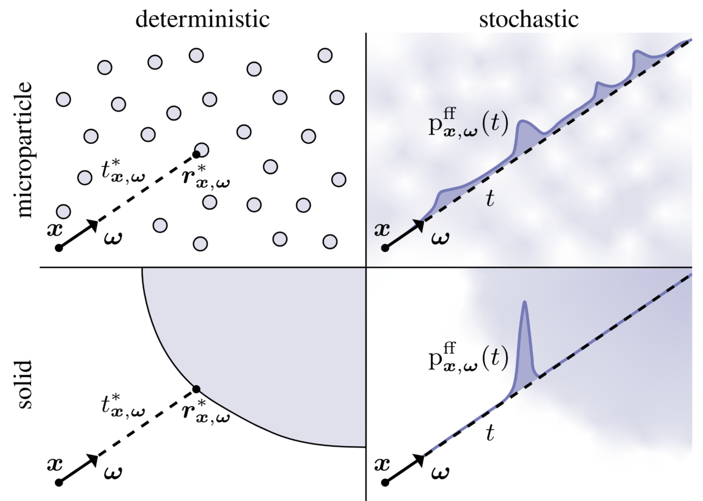
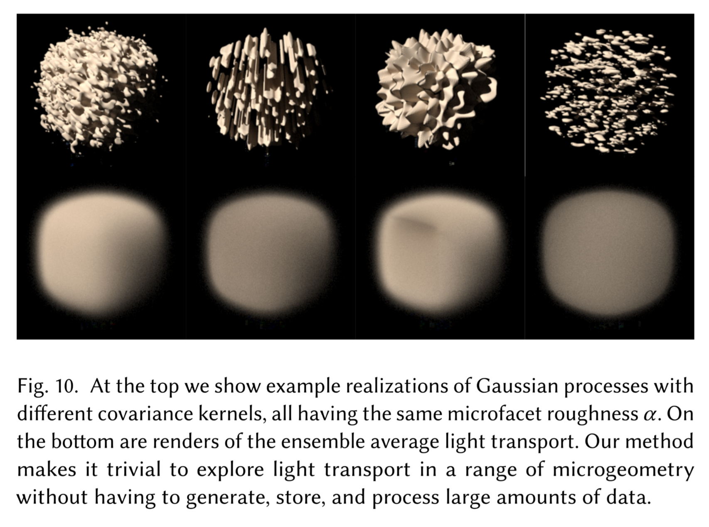

Interesting Topics For November
General
Introduction
It’s always good to occasionally take a step back among the hustle and bustle, recalibrate your sense of direction, find new interesting questions to answer, and reflect the progress made from the past year. This blog aims to fossilize my interests at this time for me to potentially start a project from several of these and look back on, and maybe of interest for you too for whatever reason it may be. Note: this is more of an unorganized thought dump.
More computer graphics than 3D vision:
- Path-space differentiable rendering
- Geometric rendering: black holes
- Rendering exotic light sources: cold-cathode displays
- Stochastic Geometry
- Re-formulating problems as light-transport problems: Inverse rendering, walk-on-stars
More 3D vision than computer graphics:
- Neural 3D Reconstruction/Generation: VGGT, 3DGS, Diffusion
- Diffusion models & stochastic differential equations (SDEs)
- Bundle Adjustment & Lie Algebra
- Fast fourier transform (FFT)
- Applications of 3D Vision + graphics: Robotics, Perception, Reinforcement Learning
Computer Graphics
Path-space differentiable rendering (PSDR)

In rendering, we take a description of a virtual 3D scene and have the renderer produce a 2D image of it given a camera location and orientation. More specifically, a scene has geometry (e.g., meshes, radiance fields) and light sources (or else the image would just be dark) where the renderer merely records the incoming radiance onto an image. So, an image is merely a record of the more complete virtual 3D scene that is easily transferred and displayed without needing to know the complicated underlying scene (e.g., *.ply files) and executing resource-intensive rendering process (e.g., GPUs). In fact, an image is not limited to recording virtual scenes, but it can also record real-life scenes where we usually don’t know the underlying complex environment (e.g., given a photo of a mountain, what is the geometry of the mountain?)1. This is where it gets interesting and how PSDR comes into play. Check the other section to see how PSDR is used in this context.
1 But remember, a visual record needs light to mediate the underlying complex scene information. (Think exposure time: darker scenes needs longer time to capture the same amount of light to produce a sufficient visual record of a scene, whereas brighter scenes just needs shorter time. If a scene is completely dark, you can think of it needing infinite amount of time to produce an equal quality of a photo.)
In forward rendering, there are mostly two common methods: rasterization and path tracing (and a mix of both). If we formalize these rendering process as a function, we get \(I=f(\theta)\), where \(I\) is the final image, \(\theta\) is the scene parameters (e.g., geometry, cameras), and \(f\) is the rendering process. What if we can differentiate it? Like \(I=\frac{d}{d\theta}f(\theta)\)? Actually, this question is not too far-fetched in that machine learning has revolutionized in how we model intelligent-like behaviors and optimization, and differentiability is the core idea that enables such learning to take place.
We will be focusing on the more physically-plausible path tracing (via path-integral formulation). In this form, differentiating the rendering process produces two terms: interior term and boundary term. You can read more about them on [1], but basically interior term is what we are mainly differentiating against and the boundary term is an important term that accounts for visibility changes, which commonly appears when we differentiate against geometry.
This is why differentiation with respect to the geometry are messy and complicated. For geometric reconstruction, the shapes can change, inducing a visibility changes on a rendered image. For estimating camera pose, same thing: potential visibility changes. For moving geometries, same visibility changes. And what do we mean by visibilty changes anyways? When some geometry goes in front of another, we have an occlusion of the geometry in the back. These changes happen on discontinuities, making the differentiation hard. Hence, there’s a lot of current actively-explored topics on computing the derivatives in these fundamental areas.
Another important categories of parameter that we differentiate against are colors. More precisely, emission strength of light sources and the modulation by BSDF. No geometry means easier interior term and no boundary term, but that doesn’t mean it is easier.. overall. Sometimes, the light sources have small areas or the BSDF is highly-specular. In these cases, sampling becomes important and there are many active topics in this regards (e.g., variance reduction).
Original paper on PSDR: [1]
There are other interesting questions on generalizing PSDR to different rendering processes and geometries:
Survey paper: [4]
Topics I need to focus more on 😄:
- Reparamaterizations
- Sampling theory
- Implementing those scary differentiated version of those algorithms, especially when re-formulating it in terms of OptiX.
Geometric rendering: black holes

When I mean geometric rendering, I specifically mean geometrically interesting light transport. Usually, rendering has always just been straight line, which serves majority of the purposes. And when we generalize the theory of light transport, we usually talk about wave 2 and quantum optics, according to [5], which is still just straight lines. Yes, mirrors, caustics, and diffraction does make it more interesting, but they still bend at a single point, not continuously. One thing pops up in my mind whenever I think of a light ray that continuously bends: black holes. Their force is so strong that it warps the light rays continuously, not just bend it at a single point.
2 The dissertation mentioned how diffraction can occur even around an object. A good example of this is half-plane diffraction, where the lightened side is just bright, but the shadow side still exhibits extra radiance from the bending of the light or even wave-like oscillation under certain conditions. This is different from umbras and penumbras. Took a while to find an example of this effect since most diffraction examples are about apertures and slits, which I feel like is better termed as “through an object.”
3 There also exists a similarly theory called special relativity, which is a specific case of general relativity. You can read more about here on §7 of the lecture notes. But basically we assume no gravity (hence, no force, no curvatures, and constant velocities) and focus on the spacetime nature of extreme cases in classical physics (e.g., perceived time at light speed).
So, I guess a quick teaser (for me and you) with a demo, I will first create a point of singularity and a light path unaffected by it. What would a light path affected by gravitational force be like? We first need to know the theory behind gravity, and currently there are practically only two out there: Newton’s law (for most use cases) and general relativity 3 (for exotic cases). You can probably guess which theory contains the black hole.
I started with §6: Black Holes, which says there are multiple kind of black holes with the Schwarzschild black hole being the simplest of all. However, this section mostly discuss about proving and understanding the various properties of many kinds of black holes, which will only be useful later on (beyond the scope). §1.3.5: Light Bending is what we care right now, discussing how light bends under Schwarzschild metric (i.e., the foundation for Schwarzschild black hole). By equation 1.54, we get the trajectory of our light ray affected by the gravitational force to be \(\frac{d^2u}{d\phi^2}+u=\frac{3GM}{c^2}{u^2}\), where \(u(\phi)=\frac{1}{r(\phi)}\) is the inverse polar radius, \(G\) is Newton’s gravitational constant (it appears again!), and \(M\) is the mass of our object warping the light path 4. I will quickly demo this by evaluating the ODE numerically via Euler’s method.
4 Recall that light has no mass (i.e., null geodesic), so technically it is not orbiting around the black hole, but just following the spacetime frame itself that’s getting curved by the black hole.
I first need to rewrite the second-order ODE \(\ddot{u}+u=\frac{3GM}{c^2}{u^2}\) (with \(\phi\) as our independent variable) into a systems of first-order ODE for Euler’s method. \[ \begin{cases} \dot{u}=v \\ \dot{v}=\frac{3GM}{c^2}{u^2}-u \\ \end{cases} \]
Additional ideas:
- Gravitational lensing (general case of black holes)
- Wormholes
- Collision of two black holes
- Red shift
- Relativistic distortion (i.e., camera near the black holes)
- Accretion disk
- Spinning black holes
- Can we use differentiable rendering on an image of a black hole to estimate various parameter of it (e.g., mass)?
- Just out of curiosity (there’s definitely a better way)
Topics to review:
- Differential Geometry
- General Relativity
- Non-euclidean geometry
- Numerical “solution” to ODE
Personal opinion: this is very different from the stuff I have done before and feels refreshing, but the math behind it is daunting at the same time.
Where graphics and astrophysics meet: paper link
Rendering exotic light sources: cold-cathode fluorescent displays (CCFDs)

I am a big fan of retro technologies, especially the warm neon lights of the bygone days. A year ago, I bought this (it’s a bit pricey) just out of fascination of what it looks like in real life. Unfortunately, it has this distinctive blue overtone which is missing when taking a photo with a consumer device (which makes it all of more interesting). Now, I’m curious if it’s possible to replicate this warm fuzzy feeling of a Nixie tube into computer rendering. There are three approaches to this with increasing level of complexity: emissive solid (i.e., a mesh with an emissive material), emissive participating media, or physically accurate simulation of CCFDs. I’ll mostly be approaching it from the emissive participating media and a bit of physically-accurate modelling (i.e., physically-plausible CCFDs).
So how does one go about rendering the warm tone of CCFDs? Are they even always in an orange tone? How do they work? I’ve came across this Google Group discussing about a book “Cold Cathode Glow Discharge Tubes”, by GF Weston from 1968, available in PDF which has a wealth of information in how CCFDs work and their physical properties. Unfortunately, there were not a lot of discussion in optical properties (of this book and elsewhere I can find) that are important in rendering CCFDs. It is most likely because these electrical discharges (hence, light) from excited gasses produce all sorts of colors that are very sensitive to various parameters such as gas pressure, cathode-anode distance, voltage, amperage, gas composition, material used in for cathodes/anodes, etc. Since I’m not here to physically simulate what CCFDs would look like from these various parameters, I’ll be focusing on Nixie tubes (which has more information usually) and maybe a limited range of parameters (it’s still interesting to see how CCFDs would evolve over certain parameters).

CCFDs can just be an emissive participating media with an assigned color of orange, but that’s no fun, since there are also various color overtones it produces depending on the gas composition that would be missing. Hence, I am having the input to just be the gas composition and some basic geometric model of the energy field (i.e., the emission surrounding the shape of the cathode or the cathode sheathed in a layer of emission5). Unfortunately, it seems like most Nixie Tube discussion lack the information on their visual properties. So, we turn to the physics of light in hopes of simulating the same physically correct emission of gas composition like shown in the picture. To get there, we need to know some radiative transfer theory, which is readily talked about in [6, Ch. 11] for volumetric scattering process and more completely in [6, Ch. 14] with the introduction of the radiative transfer equation.
5 Sometimes, the negative glow is shown sticking onto the cathode. In other times, we have two dark spaces with three regions of emission from the cathode side (before the Faraday dark space). The geometries of emission can be quite sensitive, so we will assume the “negative glow” is sticked/sheathed onto the cathode.
6 As I look into this & the Nixie Tubes more, there are many more physical abstraction you can uncover (e.g., electrical glow discharge, fluorescent bulbs, anisotropic absorption/out-scattering, etc.), which at a certain point, you’re just modelling electromagnetic waves themselves. In my opinion, we model the most physically-grounded renderer as much as possible while also keeping it fast, so given some known discrete scene parameters, we can render a realistic image in a computationally-sensible way. I hope this is what graphics is all about.
In computer graphics, rendering volumetric effects requires us to at least model three main 6 physical process: absorption, emission, and scattering (further broken down as in-scattering and out-scattering). By assumption, we model these effects as differential equations (ordered as emission, absorption, out-scattering, and in -scattering):
\[ \begin{align} dL_o(\mathbf{x},\mathbf{\omega}) &= \sigma_a(\mathbf{x},\mathbf{\omega}) L_e(\mathbf{x},\mathbf{\omega})dt \\ dL_o(\mathbf{x},\mathbf{\omega}) &= -\sigma_a(\mathbf{x},\mathbf{\omega}) L_i(\mathbf{x},-\mathbf{\omega})dt \\ dL_o(\mathbf{x},\mathbf{\omega}) &= -\sigma_s(\mathbf{x},\mathbf{\omega}) L_i(\mathbf{x},-\mathbf{\omega})dt \\ dL_o(\mathbf{x},\mathbf{\omega}) &= \sigma_s(\mathbf{x},\mathbf{\omega})\int_{S^2} p(\mathbf{x},\mathbf{\omega},\mathbf{\omega}_i)L_i(\mathbf{x},\omega_i)d\omega_i dt \\ \end{align} \]
where \(dL_o(\mathbf{x},\mathbf{\omega}):=L_o(\mathbf{x}+\mathbf{\omega}dt, \mathbf{\omega})\) and \(L_o(\mathbf{x},\mathbf{\omega}):=L_i(\mathbf{x},-\mathbf{\omega})\) (remember that we are only traversing the volumetric media in a straight line to simplify our model).
\(\sigma_a\) is the absorption coefficient and \(\sigma_s\) is the extinction coefficient, and \(p\) is the phase function—the BSDF reciprocal of volumetric scattering.
So, if we rewrite the formulas, the combined differential change in radiance at a point \(\mathbf{p}'=\mathbf{p}+t\mathbf{\omega}\) in a volumetric media is \(\frac{d}{dt}L_o(\mathbf{p}',\mathbf{\omega})=-\sigma_t(\mathbf{p}',\mathbf{\omega})L_i(\mathbf{p}',-\mathbf{\omega})+\sigma_t(\mathbf{p}',\mathbf{\omega})L_s(\mathbf{p}',\mathbf{\omega})\). The \(\sigma_t=\sigma_a+\sigma_s\) is the extinction/attenuation coefficient, and in this case it can be interpreted as the medium’s density, where larger value means more effect from the medium while lower value means less effect (i.e., transparent air). Notably, the first term includes the transmittance, which can be analytically 7 solved into \(e^{-\sigma_t d}\) where \(d\) is the distance 8. Additionally, in [6], Equation 11.10, they mysteriously used the indirect \(T_r(\mathbf{p}+t\omega\to\mathbf{p}')\) instead of the more direct \(T_r(\mathbf{p}\to\mathbf{p}+t\omega)\), but are equivalent with a change of variable. This can be thought of finding the optical depth/thickness from \(0\to t\) or remainder of the optical thickness from \(t \to d\) (the inner transmission integral).
7 Assuming homogenous media (i.e., constant density).
8 This is better known as the exponential volumetric transport, which is commonly seen in NeRF and NeuS. A natural question to ask is whether non-exponential volumetric transport exist? In fact, it does. The volumetric transport we, and the book, implicitly assume is the Beer-Lambert law., whereas non-exponential version opens a whole can of worms. Both all are governed by the generalized radiative transfer equation (RTE).
9 As usual, we assume each \(N\)-length path has a single emission source at the end, but \(N\) can vary from various sampled paths. Just makes the math cleaner without restricting anything.
To actually render volumetric effect, we need a volumetric integrator that generalizes the volumetric scattering effect as a path -integral formulation. The general idea is simple: we just generalize the formulation where the domain include medium locations instead of just surface locations and the measure extended to measure positions of volumetric effect. The contribution function is extended to support phase functions (i.e., in-scattering effects), transmittance (i.e., absorption and out-scattering), and emission 9.

As I’m writing this out, I also realized clouds is another form volumetric media I want to see it work. Not just a static cloud, but like maybe some procedural noise or even a simple fluid simulation going to see the clouds grow and shrink over time.
Additional ideas:
- Fluid simulation of clouds?
- Accurately render the emission spectrum described from a molecular composition?
Topics to review:
- Radiative transfer equation (RTE)
- Beer’s Lambert Law
- Fluid dynamics
- Sampling volumetric light transports
Personal opinion: I think this follows more on traditional computer graphics for good reason, volumetric media is common and knowing it is useful (and it’s also fun).
Originally wanted to model some exotic light sources, but realized they are quite a complex physical process. This section (i.e., the topic) is probably more aptly named as volumetric light transport. Good thing I did this so I have a better idea what the project could look like.
Stochastic geometry
As if probability (or this notion of probabilistic stuff) wasn’t enough, stochasticity (or stochastic stuff) is this new kid down the street I have been hearing quite frequently (apart from stochastic gradient descent). Let us answer first on what is stochasticity, and how is it different from “probabilistic”?
According to Merriam-Webster, for something to be stochastic, it means the something involves a random variable, chance, or probability, which actually is just ever more slightly specific then the term “probabilistic.” In other words, they’re quite same. However, from my initial understanding, people generally associate probabilistic model as something that emphasizes more on learning and inference, whereas stochastic model emphasizes more on modelling the randomness (to a certain degree) of what otherwise would be a mostly deterministic evolutionary process over time, space, or any other indexable/ordered objects (i.e., stochastic process).
Now the phrase “stochastic geometry” should be a bit clearer now, let’s just dive what’s all the buzz with this in these two papers: [7] and [8]. 10 Remember, we should always be asking ourselves whether this “stochastic geometry” is bringing us benefits in one or both aspects while maintaining at least one other aspect: computationally practicality (on current or near future processors) and physically-correct appearances 11.
10 Actually, the more I’m reading this two papers, the more I am grateful that I have covered volumetric light transport first😅. (Hinting on whats coming up.)
11 If we only want physically-correct appearances, we might as well have all the supercomputers in the world to handle all the complex physical phenomenon (which actually uses a ton of statistics for a long time already). If we only want computational practicality, we have rasterization (e.g., vanilla Minecraft, Roblox, Terraria, etc.).

[7] focused on generalizing the exponential volumetric transport to solid media to explain how recent works in signed distanced fields 12 have been successful in modelling opaque, solid geometries as stochastic participating media.
12 SDFs requires some sort of volumetric transport to be rendered directly. There are also marching cubes to convert SDFs into meshes.

Their novelty is mainly in developing an efficient rendering algorithm for a new type of scene representations. While this efficient algorithm is lathered with technical details, the background of their work is interesting: bringing stochasticity into scene geometry to unify all representations into one, which traditionally has a collection of specialized models to render certain geometries (usually surfaces and participating media). This new generalization naturally gives us geometries that are in between the participating media and surfaces known as “mesoscale” geometries. I hope this allows us to additionally model certain appearances in the physical world that would otherwise be difficult (i.e., larger parameter space that fits closer to physically-correct models).
While both papers uses the same particular interpretation of stochastic geometry, known as stochastic implicit surfaces (SIS) via signed distance functions (SDF), [7] emphasizes on one particular case where opaque solids are represented as stochastic participating media due to the rise of NeuS (and indirectly via NeRF), whereas [8] attempts to further generalize all classes of geometries onto a continuum that allows exploration of new materials (that could potentially be useful for physically-correct geometric modelling).
Topics to review:
- Volumetric light transports
- Stochastic process
Personal opinion: This seems interesting to me where we incorporate randomness into opaque solid geometries. In reality, this idea has sort of been implicitly used in a lot of places already (e.g., NeuS) and mostly serves as a theoretical interest. But if we see stochastic geometry as a way to generalize material models, I think this is something cool to see it work on a toy example.
Re-formulating problems as light-transport
It is always interesting to see how other problem domains can be reduced to a light transport problem (or to any problem in general), since you get to explore and understand what are the fundamental properties of light transports that would be useful to find the solution. Additionally, you would probably have to figure out what are the underlying assumption needed to enables these structure for finding potential solutions. Currently, there are two notable domains of problems that fits well into light-transport: inverse rendering (via differentiable rendering) and PDE solvers.
Inverse Rendering
Rendering \(f\) is all about capturing lights from known scene description \(\theta\) into images \(I\) right 13? \(I=f(\theta)\)
13 As mentioned in the first section
Camera \(C\) is all about capturing lights via real physical process from unknown scene description \(\phi\) into images \(I'\) right? \(I'=C(\phi)\)
What if we want to find the unknown \(\phi\)?
If \(f\approx C\) 14, we can minimize the difference between the two images via optimization to find the optimal scene description \(\theta\) that best estimates \(\phi\), where \({\arg\min}_\theta I-I'={\arg\min}_\theta f(\theta)-C(\phi)\). This requires differentiating the rendering process with respect to \(\theta\), allowing us to piggy-back on years of development on tools developed from forward physically-plausible rendering into inverse rendering.
14 In other words, we assume that our synthetic rendering process \(f\) is able to model most light phenomenon accurately, almost like \(C\).
PDE solvers
Whenever I think of solving anything about differential equations, I just think of the common examples given from classes: Newton’s law of cooling or the logistic growth models (maybe for good reason??). But in PDEs, solutions are much more interesting to think about and visualize since a large part of is solving them numerically15. Common methods includes finite element method (FEM) and boundary element method (BEM), but they all have tradeoffs, especially when we want to query a value in the interior. However, we can use Walk on Spheres to find the value more efficiently from the principles of light transport and computer graphics.
15 Actually, there’s some interesting analytical solutions and analysis in ODEs/PDEs such as Laplace and Fourier transformation.
There’s an online course that talks about this more in-depth: [9].
Any others?
It is likely that I will have to play around other orthogonal subjects that interests me and see if there are any problems in there that can be reduced to a light transport.
3D Vision
Neural 3D Reconstruction/Generation
3DGS sounded very cool at first, but you would realize soon enough that they are more for novel-view synthesis, because at the end of the day, they are still a point cloud. Though this is changing fast also. From their pipeline, I guess one thing that still intrigues me is how they do the adaptive density control. A lot of them are heuristics, but two main ones are under-reconstruction and over-reconstruction, both derived from view-space positional gradients (i.e., what direction should the original gaussian move to minimize the error). If the gaussian is small and in under-reconstructed region, they just make a clone and move it along the original gaussian splat’s view-position gradient. If the gaussian has a high-variance and is in over-reconstructed region, then just use the original gaussian as PDF for sampling the next two gaussian’s position with smaller size.
The problem of Structure from Motion is how can we estimate camera poses and world geometry (usually point clouds) just from images? Remember, a lot models relies on this for their training, such as NeRFs and 3DGS. Hence, it is of great interest.
- Traditional (old): COLMAP
- Mixed (new): Dust3r, Mast3r, VGGSfM
- Full ML (latest): VGGT
With the recent release of VGGT, it is awesome to see 3D reconstruction working purely from a feed-forward network with minimal pre-processing and post-processing.
Another intriguing problem are generative models that generate 3D data, especially from a single view and via diffusion. I will have to look more papers about 3D estimation from a single-view.
Diffusion Models & Stochastic Differential Equations (SDEs)
The general idea is that this is a generative model that is able to spatially generate realistic 2D images unconditionally or conditionally (e.g., text prompt, image prompt, etc.). It does this clever trick where it repeatedly adds noise to the training images until it becomes indistinguishable to fully random images, but the model is trained on these noises to denoise them later. So on the next time (i.e., inference-time), you feed it a random image and it will denoise it to look realistic learnt from the training dataset. There are many great resources to learn diffusion models now. In particular, if I do get the time, I plan to read [10, Ch. 17–18] and the original DDPM paper.
In the most recent survey paper on diffusion models here, there’s an interesting connection between the diffusion process and SDEs. ODEs/PDEs are useful when modeling from a set of rules (i.e., equations) of a dynamic system, which we solve the true underlying function analytically or numerically via simulations. Sometimes, these dynamic systems can have some random process (e.g., diffusion noise) term incorporated, resulting in stochastic differential equations.
Additional ideas:
- Diffusion models on 3D geometries
- Code or video animation of SDEs (since they’re inherently an evolutionary process of a dynamic system, this is probably the best way for visualization)
Topics to review:
- Stochastic process
- Stochastic differential equations
- Stochastic calculus
Bundle Adjustment (BA) & Lie Algebra
I have always thought Bundle Adjustment was small, simple thing in SfM16, until I started coming across in the original ORB-SLAM paper and mentions some foreign concepts such as Lie Algebra. Lie (pronounced Lee) Algebra is interesting in that it has a geometric intuition from differential geometry, but also has an associated Lie Group (from group theory). However, Lie Algebra is commonly talked in relation to robotics state estimation in the book and the paper. Regardless, these are some pointers that seems to be a good resource to get started.
16 It’s the last process that goes by pretty fast usually. And this idea of “adjustment” didn’t really do some justice since it just evokes a small algorithm that nudges parameter to achieve something that’s a tad bit more optimal to make the estimations more polished and nice (which it does, but much more complex).
For bundle adjustment, the key idea is that we already have a rough estimation from previous estimates (or just randomly initialize it a super bad state). Then, BA attempts to globally adjust and refine both the camera pose and point locations to produce a higher quality reconstruction. This classical survey talks how one implements BA in-depth, while this modern survey attempts to optimize BA in a distributed manner.
Additional ideas:
- Code or video animation of the optimization process
Topics to review/prepare:
- Non-linear optimization
- Levenberg–Marquardt
- Lots of linear algebra tricks
- Lie algebra + groups (why not)
Fast Fourier Transform (FFT)

First of all, what is fourier transform? It converts raw signals (i.e., time domain) into an amplitude function of frequency (i.e., frequency domain). In the [11, Ch. 15–16], they talk more rigorously on how it works, specifically discrete fourier transform in the context of spatial 2D image signals.
Fast fourier transform is an algorithm to automatically find the transformed signals automatically. It will be interesting if I just implement my own FFT and see the various frequency that automatically pops out and an attempt to reconstruct it signal by signal.
This also reminds of spherical harmonics. Since they also use complex exponentials, maybe there’s some connection there?
Topics to review/prepare:
- Discrete fourier transform
- FFT algorithm
Applications of 3D Vision + Graphics

One particular applications of 3D vision and graphics that is interesting right now is visuomotor and generative world models, combining all three disciplines from robotics (specifically autonomous agents) and perception (i.e., vision with sensor fusion) to reinforcement learning. The applications for both of them definitely leans more on the frontier/novel side of things, but it would be interesting to see it used in more classical settings (because why not).
Summary
Honestly, I definitely rushed some on some of the later topics, but it’s good enough to better understand what undertaking each of these project would be like. Some of them could easily be treated like an entire course. Regardless, I should keep each exploration of the subjects as many small blogs rather than this one giant blog of many subjects.